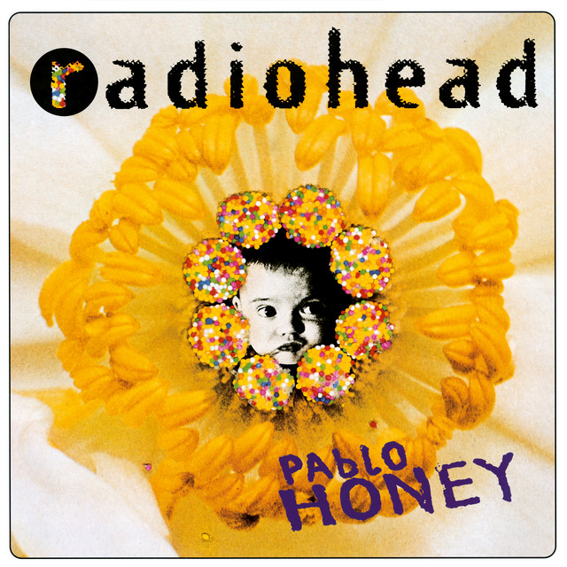
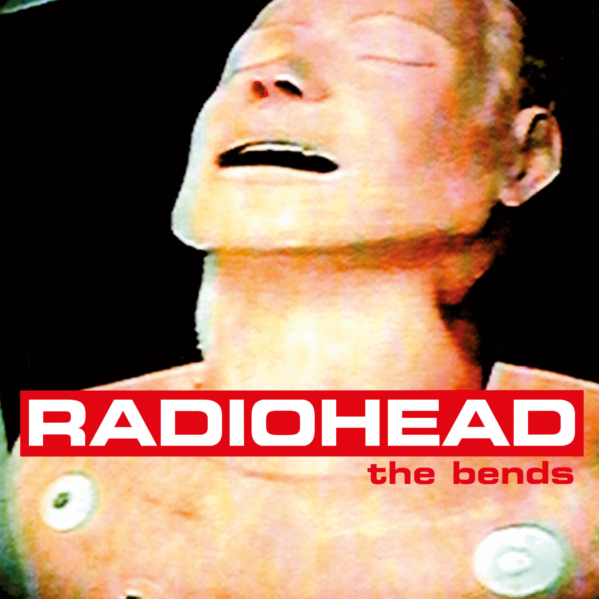
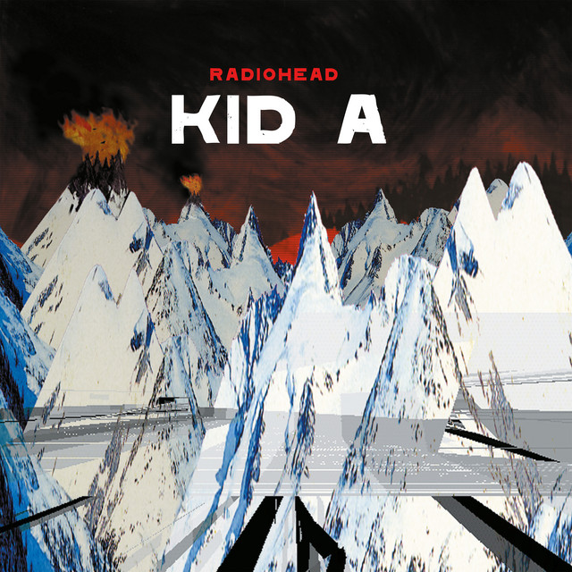
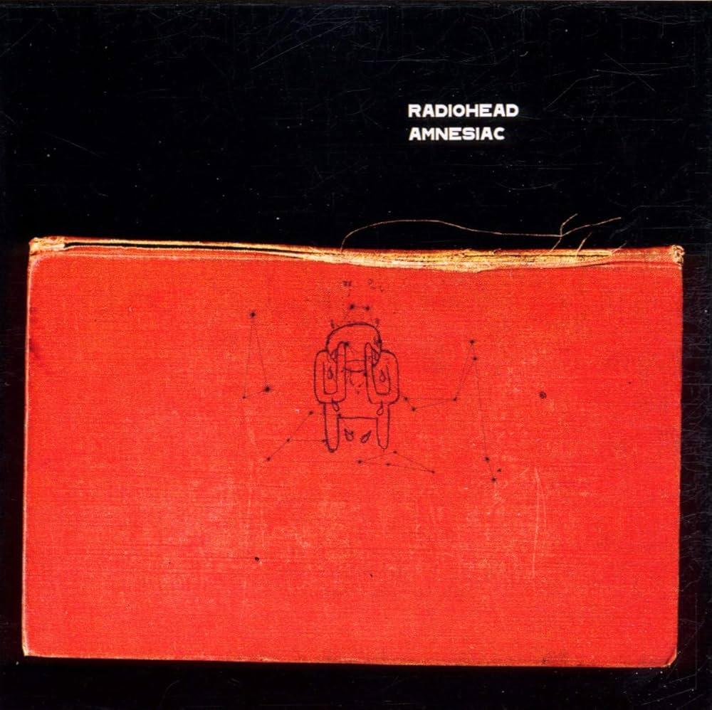
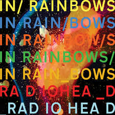
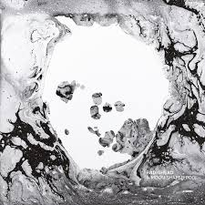

Pablo Honey é o álbum de estreia da banda britânica Radiohead, lançado em 22 de fevereiro de 1993 no Reino Unido pela Parlophone e em 20 de abril de 1993 nos Estados Unidos pela Capitol Records. Foi produzido por Sean Slade, Paul Q. Kolderie e Chris Hufford. Com um som que tenta se aproximar do grunge da banda Nirvana, Pablo Honey é descrito por Ed O'Brien, um dos guitarristas do Radiohead, como um álbum "hedonista" que "você pode colocar em um carro com teto aberto em uma noite de sábado indo para uma festa".
DESTAQUES: You, Creep, Blow Out.

The Bends é o segundo álbum de estúdio da banda de rock inglesa Radiohead, lançado em 13 de março de 1995 pela Parlophone. A maioria das faixas foi produzida por John Leckie, com produção extra de Radiohead, Nigel Godrich e Jim Warren. The Bends combina músicas de guitarra e baladas, com mais arranjos contidos e letras enigmáticas do que o álbum de estreia do Radiohead, Pablo Honey.
DESTAQUES Todas as músicas são destaques, talvez com a exceção de Bones e Sulk.

OK Computer é o terceiro álbum de estúdio da banda de rock inglesa Radiohead, lançado em 21 de maio de 1997 e produzido por Nigel Godrich. As letras retratam um mundo distópico repleto de consumismo desenfreado, capitalismo, alienação social e mal-estar político, com temas como transporte, tecnologia, insanidade, morte, vida britânica moderna, globalização e anticapitalismo. Nessa função, diz-se que OK Computer possui uma visão presciente do clima da vida no século XXI.
DESTAQUES: Todas as músicas são destaques, sem nenhuma exceção.

Kid A é o quarto álbum de estúdio da banda Radiohead, lançado a 2 de outubro de 2000. Considerada uma das obras primas da banda junto de OK Computer, em Kid A o Radiohead inovou com novas propostas musicais e fuga da grande exposição que vinha tendo com o disco anterior. As guitarras foram quase que totalmente deixadas de lado, dando lugar para experimentações eletrônicas extremamente detalhadas, com influência de músicos como Autechre e Aphex Twin.
DESTAQUES: Everything in its Right Place, How to Disappear Completely, Idioteque.

Amnesiac é o quinto álbum de estúdio da banda britânica Radiohead, lançado em 2001. O álbum foi gravado junto com seu antecessor Kid A mas a banda optou por lançar o restante do material mais tarde, evitando assim um álbum duplo. Menos sombrio, mas não menos experimental que Kid A, Amnesiac segue o caminho anticomercial com as texturas eletrônicas e acústicas agora mais melódicas.
DESTAQUES: Pyramid Song, You and Whose Army?, Knives Out, Life in a Glasshouse.

Hail To The Thief é o sexto álbum de estúdio da banda Radiohead, lançado a 9 de Junho de 2003. O álbum segue a linha dos dois discos anteriores Kid A e Amnesiac com sons experimentais e melancólicos, adicionando as guitarras da fase de OK Computer. O resultado é uma espécie de resumo do que o Radiohead já fez em mais de 10 anos de existência.
DESTAQUES: 2 + 2 = 5, Sail to the Moon, There, There, A Wolf at the Door.

In Rainbows é o sétimo álbum de estúdio da banda britânica de rock Radiohead. Foi lançado, inicialmente, de forma independente no dia 10 de outubro de 2007 em versão digital disponível para download, na qual os consumidores decidiam o quanto pagariam pelo disco (incluindo não pagar absolutamente nada). Dessa vez, as letras se mostraram menos políticas e mais pessoais do que as apresentadas em álbuns anteriores.
DESTAQUES: Praticamente todas as músicas são destaques, talvez com a exceção de Faust Arp.

The King of Limbs é o oitavo álbum de estúdio da banda inglesa de rock alternativo Radiohead. Foi lançado no dia 18 de Fevereiro de 2011.O título deriva de King of Limbs, um antigo carvalho na floresta de Savernake em Wiltshire, perto de Tottenham House, onde o Radiohead gravou In Rainbows. Segundo a Rolling Stone, The King of Limbs representou um afastamento ainda maior do rock convencional e das estruturas de canções, em favor de "música eletrônica melancólica e rítmica, baladas de ritmo glacial e psicodelia ambiente".
DESTAQUES: Lotus Flower, Codex, Separator.

A Moon Shaped Pool é o nono álbum de estúdio da banda britânica de rock Radiohead, lançado em maio de 2016. Anunciado sob mistério do grupo, foi distribuído cinco anos após seu antecessor, The King of Limbs, e também produzido por Nigel Godrich. A Moon Shaped Pool é um álbum de art rock. Ele retém os elementos eletrônicos da banda, mas os sobrepõem com belos timbres e melodias, fazendo o uso do violão, piano, e orquestras.
DESTAQUES: Burn the Witch, Daydreaming, True Love Waits.
